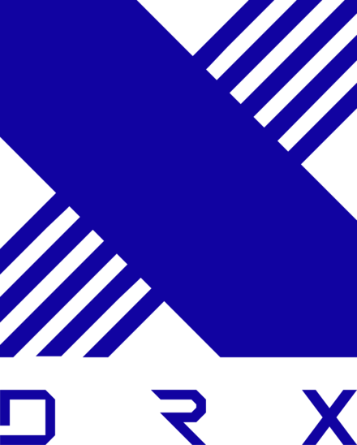

A LoL E-sport Története
A League of Legends (LoL) e-sport világa 2011-ben indult, amikor megrendezték az első világbajnokságot, amelyet a Fnatic nyert meg. Azóta a LoL Worlds a legfontosabb éves esemény a játékosok és a rajongók számára. A kezdeti években az európai és ázsiai csapatok domináltak, de az évek során a régiók közötti verseny egyre élesebbé vált, és a különböző kontinensek csapatai rendre új stratégiákkal és játékstílusokkal rukkoltak elő.
2012-ben a Taipei Assassins mindenkit meglepett azzal, hogy elnyerte a világbajnoki címet, ezzel Tajvan első nagy e-sport sikerét elérve. Ez az év emlékezetes maradt, mert a TPA nem számított a verseny legnagyobb esélyesének, mégis rendkívül magabiztos győzelmet arattak az elődöntők és döntők során.
2013-ban a LoL világbajnokság igazi korszakváltást hozott. Az első SK Telecom T1 dominálta a versenyt, és a koreai e-sport elindult a globális dominancia útján. Faker, a csapat középső ösvényes játékosa, mára a LoL egyik legnagyobb legendájává vált. Ez az év nemcsak SKT T1 sikeréről szólt, hanem arról is, hogy a koreai csapatok hogyan emelték az e-sportot új szintre a játéktudás és a stratégiák tekintetében.
2018-ban történt az első igazán nagy "nyugati" siker, amikor az Invictus Gaming megnyerte a világbajnokságot, legyőzve a rendkívül erős koreai és kínai csapatokat. Az Invictus Gaming győzelme mérföldkő volt, mert ezzel bebizonyították, hogy a Nyugat is képes globális szinten versenyezni a keleti csapatokkal.
A 2022-es világbajnokságot a koreai DRX nyerte, amely a LoL történetében egyike volt a legizgalmasabb versenyeknek. A döntő mérkőzés drámai pillanatokban bővelkedett, és az ötödik mérkőzésig elhúzódott. A DRX története különösen inspiráló volt, mert sokan alábecsülték őket az év során, mégis képesek voltak felülmúlni minden elvárást, és világbajnoki címet szerezni.
Magyar vonatkozásban érdemes megemlíteni, hogy Vizicsacsi, aki az egyik legsikeresebb magyar LoL-játékos, többször szerepelt az LEC-ben (League of Legends European Championship), Európa legmagasabb szintű LoL-bajnokságában. Illetve a világbajnokságon is megfordult már. Bár világbajnoki címet még nem nyert, Vizicsacsi jelenléte bizonyítja, hogy Magyarország is képviselteti magát a nemzetközi LoL színtéren.
Világbajnokok
| Év | Győztes Csapat | Csapat logója | Régió | Eredmény |
|---|---|---|---|---|
| 2011 | Fnatic | Európa | 2 - 1 | |
| 2012 | Taipei Assassins | Tajvan | 3 - 1 | |
| 2013 | SK Telecom T1 | Korea | 3 - 0 | |
| 2014 | Samsung White | 3 - 1 | ||
| 2015 | SK Telecom T1 | 3 - 1 | ||
| 2016 | 3 - 2 | |||
| 2017 | Samsung Galaxy | 3 - 0 | ||
| 2018 | Invictus Gaming | Kína | 3 - 0 | |
| 2019 | FunPlus Phoenix | 3 - 0 | ||
| 2020 | DWG KIA | Korea | 3 - 1 | |
| 2021 | EDward Gaming | Kína | 3 - 2 | |
| 2022 | DRX |  | Korea | 3 - 2 |
| 2023 | JD Gaming | Kína | 3 - 1 | |
| Forrás: LoL Esport Wiki |
A LoL E-sport Jövője
A League of Legends e-sport folyamatosan növekszik, és várhatóan az elkövetkező években még nagyobb népszerűségre tesz szert. A Riot Games továbbra is invesztál a versenyekbe, és új formátumokat, eseményeket vezetnek be. Az évről évre növekvő nézettség és a bővülő közönség megerősíti, hogy a LoL e-sport nemcsak a játékosok, hanem a rajongók számára is egyre fontosabb.
A technológia fejlődésével, beleértve a virtuális és kiterjesztett valóság (VR és AR) lehetőségeit, elképzelhető, hogy a jövőben ezek az eszközök is beépülnek a versenyek közvetítésébe, még izgalmasabb élményt kínálva a nézők számára.
A LoL közössége továbbra is rendkívül aktív, és a játék globális hatása egyre nagyobb. A jövő LoL világbajnokságai nemcsak a játéktudásról, hanem az e-sportok jövőjének formálásáról is szólni fognak, új trendeket és technológiai fejlesztéseket mutatva be a közönségnek.